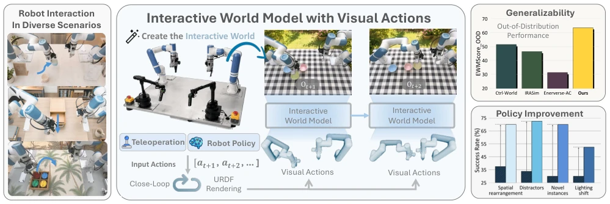
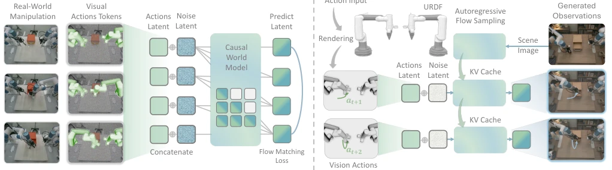
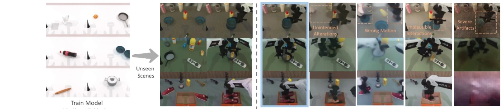
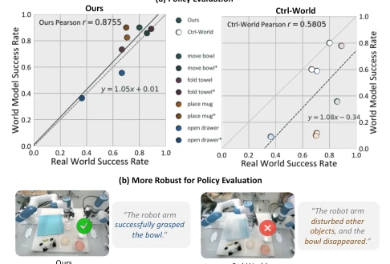
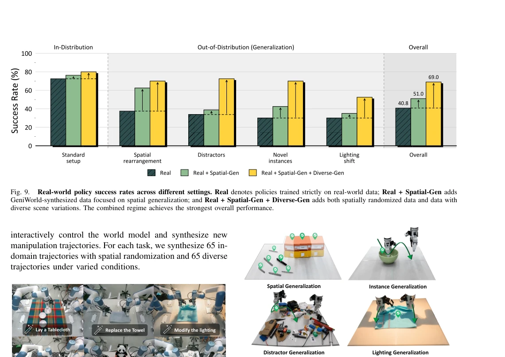
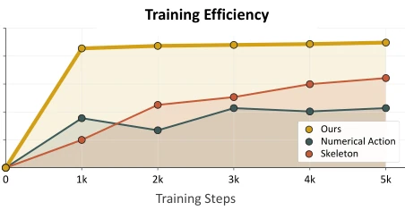
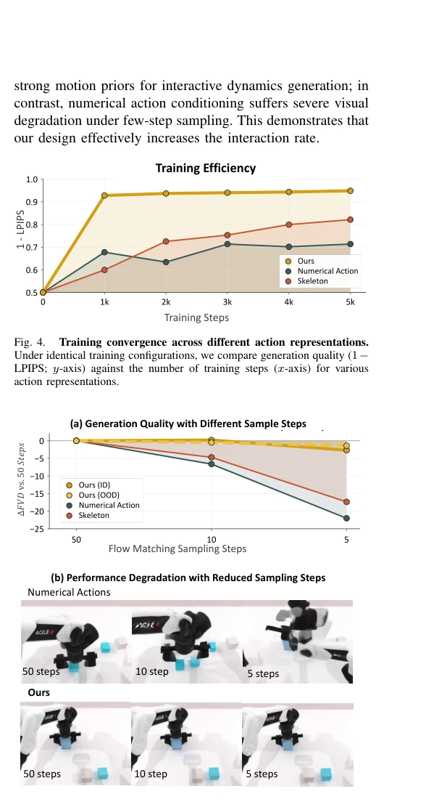
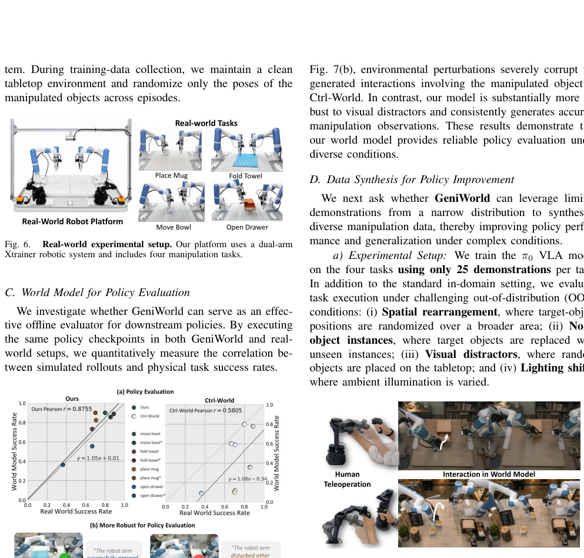
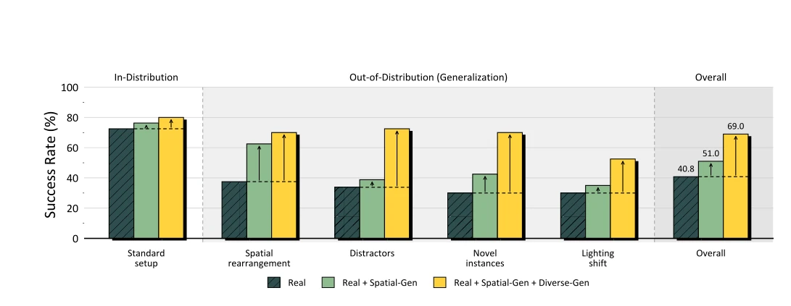
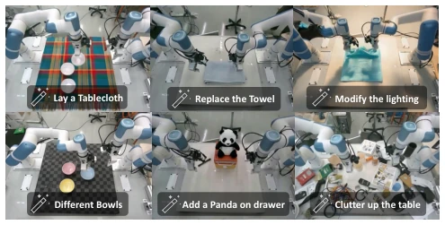

GeniWorld can be considered a significant boost for action-conditioned world models, attempting to solve longstanding problems using visual actions. Previous methods [18][19] directly fed numerical actions into video generation models, resulting in that regardless of how elaborate the robot's movements are, objects in the scene break inappropriately, and OOD generalization basically relies on metaphysics. The core innovation of this paper is to render actions into Visual Actions first, forcibly decoupling kinematics and environmental dynamics. Although relying on URDF rendering has a bit of "physics engine dependency syndrome", the performance on RoboTwin 2.0 [15] is indeed impressive, with FVD not collapsing under Clean-to-Random scenarios. More interestingly, it can also serve as a policy evaluator, more reliable than simulators that only overfit. However, the matter of synthetic data improving policy performance is essentially data augmentation; can it truly replace real-world collection? We will have to see in the future, but at least it proves the advantage of visual action conditioning in spatial alignment, which is much stronger than pure numerical input.
Embodied AI strategies are often as fragile as potato chips in complex environments [13][14]. Existing action-conditioned world models [18][19] can predict the future, but most directly condition on numerical action vectors. This has two fatal flaws: first, numerical vectors lack spatial grounding (Spatial Grounding), so models cannot learn fine interaction details, such as contact points during grasping; second, low-dimensional action conditions entangle robot motion and environmental changes, leading the model to focus excessively on irrelevant details and fail directly when generalizing to unseen scenarios (OOD). For example, Ctrl-World [18] sees FID skyrocket in random scenarios, and IRASim [19] is even more unbearable. We need a method that can explicitly model robot-environment interaction and decouple kinematics, so as to achieve robust zero-shot generalization under limited data; otherwise, the model can only merely perform within the training distribution forever.

Fig. 1. Overview of GeniWorld. GeniWorld is an autoregressive robotic world model that transforms action inputs into visual action representations, enabling closed-loop interaction with human operators and robot policies. Trained on limited scene-specific demonstrations, GeniWorld generalizes to out-of-distribution (OOD) scenarios to produce high-fidelity observation predictions. Furthermore, it synthesizes rich manipulation trajectories to boost downstream policy performance and robustness under diverse conditions.
GeniWorld's Pipeline design focuses heavily on spatial consistency. First, targeting the target robot system, using URDF models and forward kinematics to convert numerical action sequences into dense motion sequences (Visual Actions), this step isolates the manipulator structure through rendering, excluding interference from background and object appearance, ensuring action conditions contain only kinematic information. Next, based on a video diffusion backbone network, encoding visual actions into action Latent via a causal 3D VAE encoder, and concatenating channel-wise with the original video Latent, forming a spatially aligned joint representation. This design aligns robot dynamics with the pre-trained visual Latent space, minimizing architecture modifications. Training stage uses Flow Matching to predict future observation Latent, and applies causal attention masks, ensuring predictions rely only on historical states. During inference, KV Cache is used to cache key-value pairs of previous tokens as historical context, combined with full self-attention mechanism, achieving high-frequency closed-loop interaction. This explicit decoupling avoids guessing physical meanings brought by implicit numerical actions, allowing the model to directly learn environmental changes driven by robot spatial motion.

Fig. 2. Overview of the GeniWorld method. We convert robot actions into visual motions via URDF rendering. These motions are subsequently encoded into latent representations and concatenated with noisy video latents. The combined representation serves as input to a causal DiT that predicts future videos via flow matching. During inference, the initial scene image is provided as the first frame. Actions are passed through the URDF-based renderer to produce motion conditions, and the model predicts future observations while leveraging KV caching to maintain historical context.
Experiments are based on the RoboTwin 2.0 [15] benchmark, divided into Clean-to-Clean and Clean-to-Random settings. Metrics cover PSNR, FVD, etc. GeniWorld outperforms Ctrl-World [18] and IRASim [19] in both settings, especially under OOD scenarios FVD is only 20.15, while IRASim reaches as high as 191.26. Qualitative results [3] show that baseline models produce artifacts or incorrect interactions in random scenarios, GeniWorld can maintain motion consistency. Additionally, as a policy evaluator, its success rate is positively correlated with the real world [7]. In terms of data synthesis, validated using the π0 [1] policy, synthetic data improved success rate under spatial rearrangement from 37.5% to 62.5% [9], proving synthetic data can effectively alleviate data scarcity issues. Even showing significant improvement under lighting changes and visual interference, indicating the interaction logic learned by the model has physical rationality, rather than simply memorizing training data.

Fig. 3. Qualitative Clean-to-Random world-modeling results. All models are trained on clean tabletop data and evaluated in unseen scenes. GeniWorld preserves the commanded robot motion and produces interaction outcomes that closely match the ground truth, whereas competing methods fail to generate the expected results in out-of-distribution (OOD) scenarios. Furthermore, the ablation results show that our dense visual actions enable more accurate interaction modeling.

Fig. 7. Correlation between policy performance in GeniWorld and the real world. (a) Joint evaluation of policy performance in in-domain scenarios and OOD scenes with visual distractions. Here, * denotes tasks with environmental distractions. (b) Comparison showing that our world simulator is more robust in OOD scenarios.

Fig. 11. Performance of policies augmented with GeniWorld- synthesized data. Even with minimal collected real-world data, policies augmented with GeniWorld-synthesized data demonstrate superior perfor- mance across diverse OOD conditions.
其他图片Other Figures

Fig. 4. Training convergence across different action representations. Under identical training configurations, we compare generation quality (1− LPIPS; y-axis) against the number of training steps (x-axis) for various action representations.

Fig. 5. Performance with different numbers of flow-matching sampling steps. We evaluate world-modeling quality using 50, 10, and 5 inference steps, where fewer steps correspond to faster inference. Visual action conditioning consistently maintains superior generation quality with fewer denoising steps than the other action representations.

Fig. 8. Teleoperation with the interactive world model. A human oper- ator teleoperates the robot in real time based on the generated scene, while the model autoregressively generates the corresponding visual responses.

Fig. 9. Real-world policy success rates across different settings. Real denotes policies trained strictly on real-world data; Real + Spatial-Gen adds GeniWorld-synthesized data focused on spatial generalization; and Real + Spatial-Gen + Diverse-Gen adds both spatially randomized data and data with diverse scene variations. The combined regime achieves the strongest overall performance.

Fig. 10. Data generation for real-world robot manipulation. We use image-editing models to modify the original scene images and create diverse, complex conditions. New manipulation trajectories are synthesized through action replay or teleoperation.